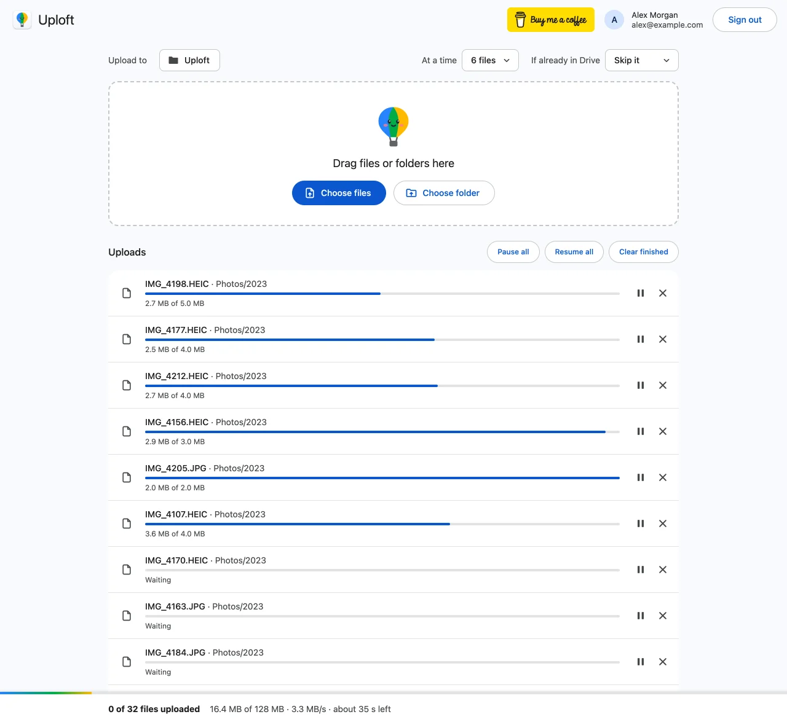

Why can't I upload a folder to Google Drive?
Published · Updated · By Sai Nath
A folder upload most often stops because Drive storage is full, a browser extension or session is interfering, or the folder runs into a Drive limit: 500,000 items in one folder, 100 levels of nesting or 750 GB uploaded in 24 hours. Check storage first, then retry in an incognito window with extensions off.
This guide comes from the maker of Uploft, the Chrome extension mentioned below. Google's limits link to Google's own pages and were checked on 29 October 2026; what the extension does comes from its source code.
Is your storage full?
Check this first. Google's storage help says that when your storage is full, you won't be able to upload or create files in Drive. Storage is shared by Drive, Gmail and Google Photos, so a full inbox can block a folder upload. Open Storage in the left-hand menu of Drive to see what is used, then free space or buy more.
In Uploft, the file that hits the wall fails with "Your Google storage is full". Files the extension had already uploaded stay in Drive.
Folder upload does nothing or never starts
If New ▸ Folder upload opens nothing, or the upload panel never appears, rule out the browser before the folder. Google's Drive help lists these steps for uploads that fail in the browser: check your internet connection, retry in a new incognito window, turn off browser extensions temporarily, switch browsers or clear the cache and cookies, check for browser updates, and sign out of your Google Account and back in. That list sits under Google's video troubleshooting, but the causes it names (cookies, extensions, an old browser) are not specific to video.
- Open an incognito window and go to drive.google.com.
- Click New, then Folder upload, and choose the folder.
- If that works, a browser extension or old cookies were in the way: turn extensions off and back on one at a time to find which.
- If it still doesn't, try another browser, or drag the folder into an open Drive folder instead.
Google's upload page also lists a third route: Google Drive for desktop, where you drag the folder into the "Google Drive" folder on your computer and it uploads without a browser tab. Its own page, Fix problems in Drive for desktop, says the app needs read and write permission on the folder it syncs.

Is the folder too big?
Size alone rarely stops a folder, but a count can. Google's Workspace limits page says a folder that isn't in a shared drive can have up to 500,000 items directly in it, and folders nest up to 100 levels deep. In the 100th folder you can add files and shortcuts but not more folders. Each user can upload and copy 750 GB to Drive in 24 hours; once that is reached, uploads stop until the limit refreshes, and only the first file that breaks the limit completes uploading. A single file can be up to 5 TB.
Large folders are also slow, and a slow upload looks like a stuck one. A 100 GB folder on a 20 Mbps upload is 100 × 8,000 = 800,000 megabits, and 800,000 ÷ 20 = 40,000 seconds, which is 11 hours 7 minutes. Read how long an upload takes before deciding it has failed, and keep the computer awake.
In Uploft, every file in the folder is its own item in the queue. One file that cannot be sent does not block the others: it is marked failed and the rest carry on. A file is marked failed after 20 failed tries in a row without progress, about 15 minutes, and time spent offline doesn't count. The summary then reads "N uploads failed", and each failed file has a Retry button.
Should you zip the folder first?
Not as a fix. A zip file is one file, so one interruption affects the whole archive, Drive shows a single .zip instead of the folders and files inside, and anything you want from it must be downloaded and unzipped. A zip can be up to the 5 TB file limit like any other file. It helps in one case: a folder with so many items that it nears the 500,000-item limit. Keep the folder as folders otherwise; a per-file queue can then retry just the files that failed.
Does it depend on the browser?
Folder upload on drive.google.com is a browser feature, so a browser or profile that blocks it, or an extension that interferes, produces the "does nothing" symptom above. Google's pages used for this guide don't list which browsers support folder upload, so the safest check is the incognito test.
Uploft needs Chrome 116 or later on a computer. Its
Choose folder button opens Chrome's folder picker; if that
picker isn't available, it falls back to an ordinary folder input. Hidden
system files (.DS_Store, Thumbs.db and
desktop.ini) are left out.
The folder keeps failing partway: how to continue without duplicates
Choose the same folder again. The extension's If already in Drive setting is Skip it by default, so files it already uploaded are not sent again and only the missing ones go up. Files that match an interrupted upload (same path, size and modified time) carry on from the last byte Drive confirmed. Folders are looked up by path, so the folders it made earlier are reused, not copied.
After a closed tab or a restart, the uploader shows an interrupted banner with Resume; Chrome may ask permission to read the folder again. Files that can't be reopened say "Choose the file again to continue". How resuming works.
On Drive's own site, an upload runs in the tab, so closing it ends the upload. Check what already arrived in Drive before uploading the same folder again, so you know which files are missing.
Other errors the extension shows in a failed row include "No access to the destination folder. Choose it again" and "No permission to add files to this folder", which mean the Drive folder you chose isn't one you can add to.
Limits to know
- The extension can't fix a full Drive, a folder at its item limit or the 750 GB daily cap; it reports them.
- "Skip it" and "Replace it" only know files the extension uploaded, because it uses Google's narrowest Drive permission (drive.file). Files you uploaded with Drive's own site are not detected, so they can be duplicated.
- Empty folders are not recreated: a folder is created in Drive when a file needs it.
- It runs in Chrome 116 or later on a computer, it isn't on the Chrome Web Store yet, and the Google sign-in is in testing, so only listed test users can sign in for now.
Uploft is free, and its source code is public. It isn't on the Chrome Web Store yet; the home page shows what it does and what it asks for.
Sources
Checked on 29 October 2026.
- Google Drive Help: Upload files & folders to Google Drive.
- Google Drive Help: Store & play video in Google Drive (Limits & errors: upload troubleshooting steps).
- Google Drive Help: Manage your Google storage (full storage blocks uploads).
- Google Drive Help: Fix problems in Drive for desktop.
- Google Workspace Admin Help: Storage and upload limits for Google Workspace.
- Uploft: source code (uploader and upload engine).